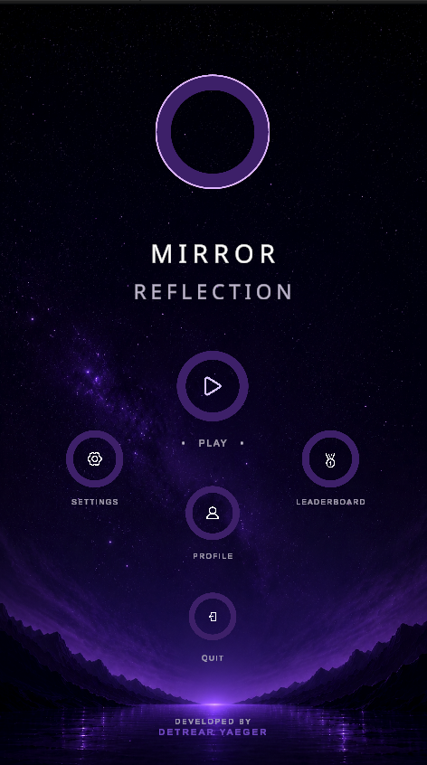
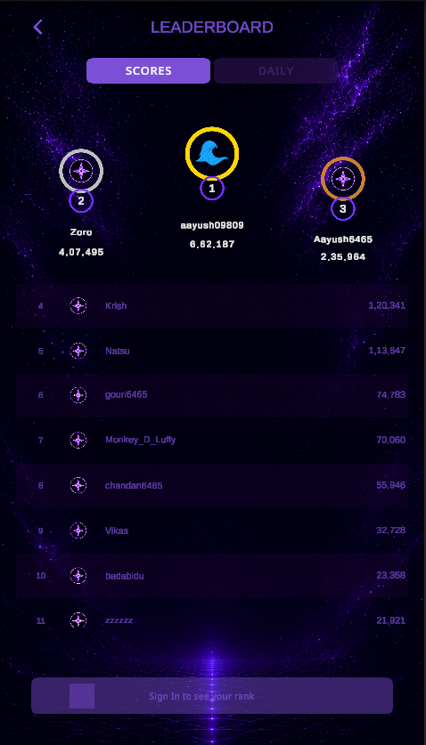
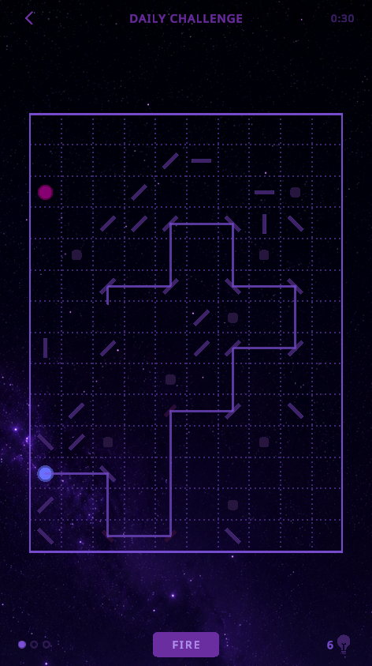
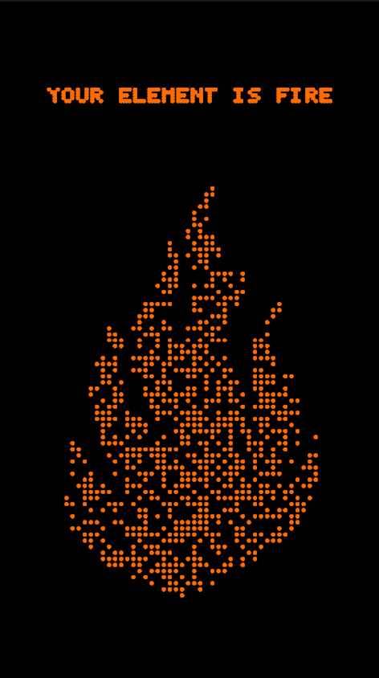
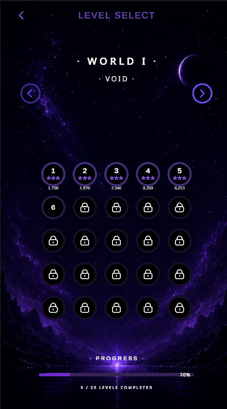

A puzzle game that anyone can start in seconds and that still rewards thinking ahead. One beam, a handful of mirrors, and a target. It had to run smoothly on inexpensive Android phones and feel calm, so the whole game lives in a dark, starry palette.
All work

Mirror Reflection
A minimalist laser reflection puzzle game for Android. Angle the mirrors, bend the beam, hit the target. I designed it, built it, localised it into ten languages and published it.
The idea
What I built
- 100 handcrafted levels across five worlds, Void, Nebula, Prism, Abyss and Ember, each closing on a checkpoint and a boss level
- An endless mode that generates new boards once the first world is cleared
- A daily challenge with streaks and a global leaderboard
- Firebase cloud saves, so progress carries across devices
- Ten languages, with Chinese, Japanese and Korean fonts downloaded only when needed to keep the install small
- A colour-blind mode with pattern-marked mirrors





After launch
Shipping was the start, not the end. I measured how players actually played and changed the game in response. Version 2.2.4 added a live beam preview so players can see the path before they fire, removed the timer from story levels, and moved to stars earned by solving in fewer turns.
I also traced a release build problem where the code optimiser stripped Google Play Billing out of the game, fixed it, and verified a real purchase end to end on the store.
Results
100levels across 5 worlds
10languages
500+downloads on Google Play
What is next
Mirror Reflection is now being rebuilt into a laser dot to dot picture puzzle, where the beam draws a picture as you solve. It keeps what players liked, the calm and the satisfying beam, and gives every level a reward you can see.